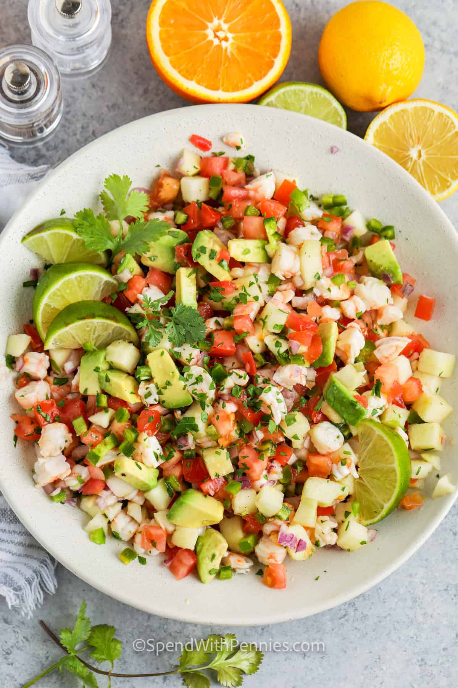

Shrimp Ceviche

Shrimp ceviche, also known as "ceviche de camarón" in Spanish, is a popular seafood dish that originates from Latin America, particularly from countries like Peru, Ecuador, and Mexico. It is made by marinating raw shrimp in a mixture of citrus juices, typically lime or lemon, along with various seasonings such as onions, tomatoes, cilantro, and chili peppers.
The acid in the citrus juices "cooks" the shrimp, denaturing the proteins and giving them a firm texture and opaque appearance, similar to cooking them with heat. The marinating process typically takes a few hours, during which the flavors meld together, resulting in a refreshing and tangy seafood dish.
Ingredients:
- Fresh shrimp, peeled and deveined
- Fresh limes or lemons (for the citrus juice)
- Red onion, finely chopped
- Tomatoes, diced
- Cilantro, chopped
- Serrano or jalapeño pepper, finely chopped (optional, for spiciness)
- Salt and pepper, to taste
- Avocado, diced (for added creaminess and flavor)
- Olive oil (optional, for a touch of richness)
Steps to prepare shrimp-ceviche
- Peel and devein the shrimp.
- Rinse the shrimp under cold water and pat dry with paper towels.
- Chop the shrimp into small pieces.
- In a large bowl, combine the chopped shrimp with diced tomatoes, diced onions, chopped cilantro, and minced garlic.
- Squeeze fresh lime juice over the mixture and season with salt and pepper to taste.
- Stir everything together until well combined.
- PCover the bowl and refrigerate for at least 30 minutes to allow the flavors to meld.
- Serve the shrimp ceviche chilled with tortilla chips or on tostadas.
- Peel and devein the shrimp.
- Enjoy your delicious shrimp ceviche!